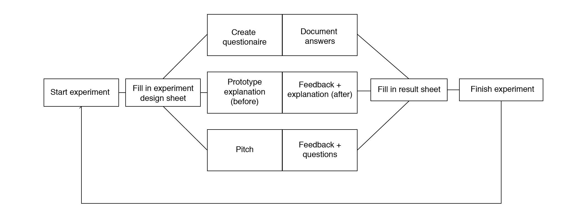
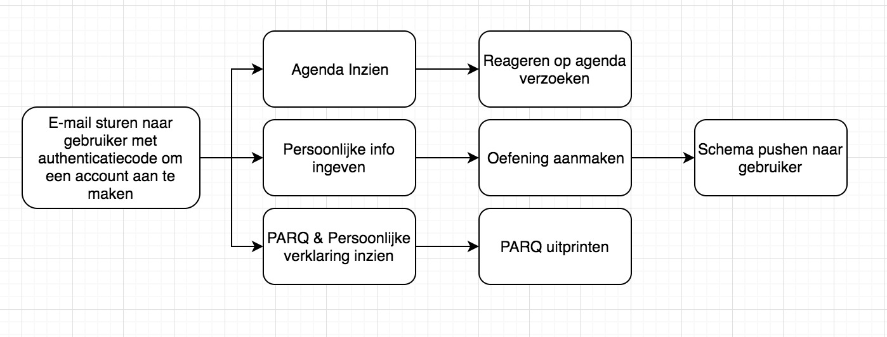
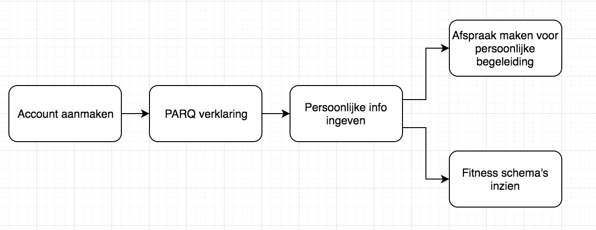

Customer journeys
Tijdens de conceptingfases van zowel BW ventures en de Fitness app. Dit hebben we gedaan om meer inzicht te krijgen in de doelgroep en hun beweegreden.
BW ventures
Fitness app
Voor de fitness app hebben we twee customer journeys gemaakt. Een voor de client en een voor de personal coach.
Personal coach.
Client.